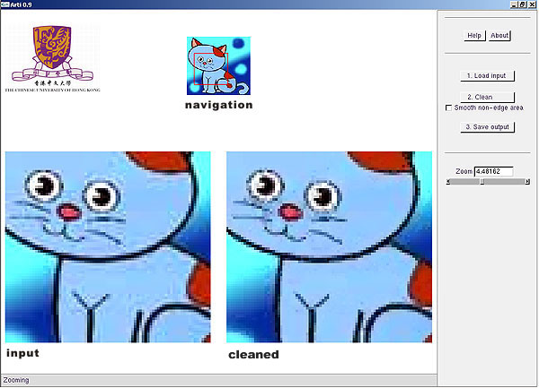

|
arti version 1.30
Designed and Developed by:
|


Introduction
-
- Arti reduces the ringing artifacts exhibited in JPEG images. Such ringing artifacts are annoying. It is especially useful for retouching cartoon (anime) images. To our knowledge, it is the fastest tool available in removing ringing artifacts. Simply try it yourself.
- This software is free for non-commercial usage (no registration required). For commercial usage, registration (free of charge) is required. Once registered and successfully logged in our record, the software license is automatically granted to you for both commercial and non-commercial usages. Our purpose of registration is simply for counting the software usage. Please register below. The information provided will not be used for any other purpose.
- Arti reduces the ringing artifacts exhibited in JPEG images. Such ringing artifacts are annoying. It is especially useful for retouching cartoon (anime) images. To our knowledge, it is the fastest tool available in removing ringing artifacts. Simply try it yourself.
System Requirement
- Hardware: Pentium III or above, 128MB RAM,
installed with graphics boards listed below
- OS: Windows 98/NT/2000/XP, with OpenGL
Installation Instruction
- Download arti 1.30
- Unzip the arti.1.30.zip into a subdirectory, say arti
- Simply run arti.exe
- Press "Load input" - Load the image to process (JPEG)
- Press "Clean" - Clean the ringing artifacts
- Press "Save output" - Save the cleaned image (BMP)
-
 Instructions: (Move the mouse cursor over the above interface to see the function of each widget)
- "
Deringing Cartoons by Image Analogies",
G. Wang, T. T. Wong and P. A. Heng,
ACM Transactions on Graphics, Vol. 25, No. 4, October 2006, pp. 1360-1379.